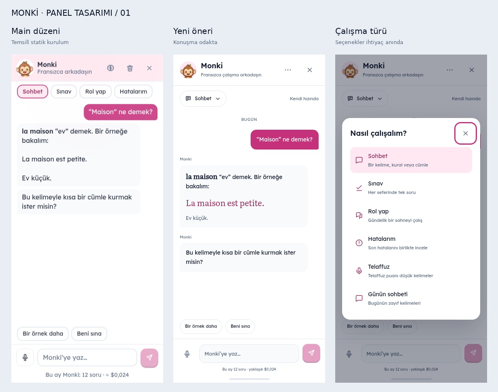

DİLOLOJİ / ARAYÜZ TASARIMI
Monki yanında. Söz sende.
Mevcut işlevleri korumayı hedefleyen bir tasarım önerisi. Başlık sadeleşiyor, çalışma türleri tek listede toplanıyor, konuşma ve yazma alanı daha sakin bir hiyerarşi kazanıyor. Üretim uygulaması değiştirilmedi.

Main görüntüsü mevcut main başlık yapısı ve CSS’iyle aynı örnek metin kullanılarak statik olarak yeniden kuruldu; canlı site ekran görüntüsü değildir. Konuşma değerleri örnektir. Prototip gerçek YZ veya mikrofon kullanmaz.